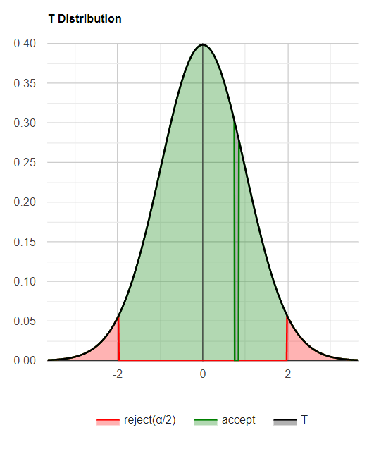
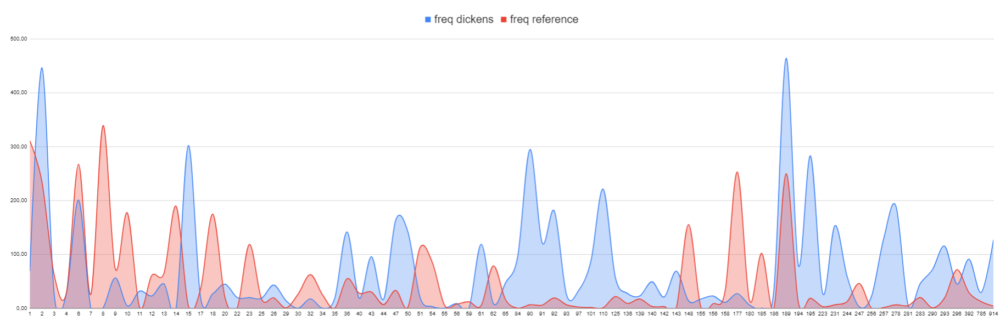

Fig 1. T distribution tested for the numbers of name occurences; Dickens vs Reference CorpusFig 2. T distribution tested for the frequencies per million of name occurences; Dickens vs Reference Corpus

Fig 3. Relative frequency of names used in Dickens' works and in the reference corpus, going from most common name given to people in real life from the left, to least common (rank ~330) to the right.